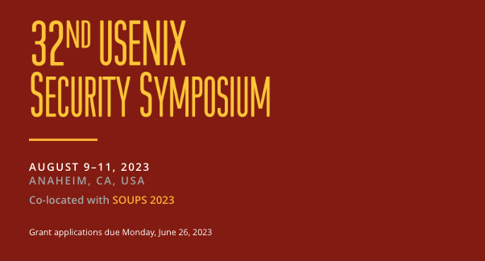
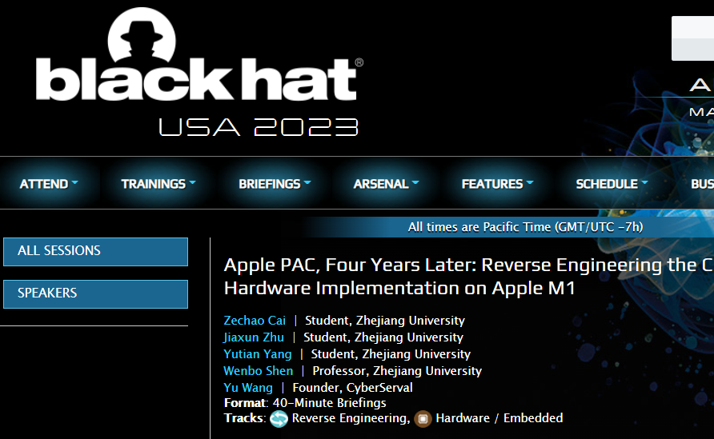

Jiaxun Zhu
About Me 🙌🏼
I’m a first-year Ph.D. student in the Department of Computer Science at Zhejiang University, China, supervised by Prof. Wenbo Shen. I am also a member of the AAA 🥷 CTF team (plz ddw🥹) and my research interests include software and system security (macOS/🤖️Android/iOS). I love pure/instrumental🎻 and pop music🎶.
Research Interests 🫰🏼
- Reverse Engineering
- Bug Hunting
- Virtualization
- Web Vulnerability
News 🔥
- [July 24, 2023] Visited Shanghai Jiaotong University.
- [July 22, 2023] My customized Syzkaller runs successfully, and still needs lots of debugging.
- [July 13, 2023] Visited Nanyang Technological University, National University of Singapore, and Singapore Management University.
- [June 1🍬, 2023] 🚀 Demystifying Pointer Authentication on Apple M1 was accepted to USENIX Security 2023 🎉. This is the first academic paper I’ve ever been involved in, and I learned a lot from it. So lucky that I can cooperate with my friends and share this happiness on Children’s Day.
- [May 28, 2023] 🎣 in DEF CON 2023 Quals with AAA in Katzebin (Tencent Keen Team) for the first time. I (🥬🐶) was not dedicated to it, but working on my topic… 💪🏼
- [May 18, 2023] Our talk was accepted to 🎩 Black Hat USA 2023 🎩 in the first cycle for reverse engineering the Apple M1 pointer authentication hardware implementation.
- [Oct 28, 2022] Participated in ZJUCTF 2022, received a ranking of 8/178, and won a watch⌚️ from HUAWEI. I was invited to join the AAA (Azure 🥷 Assassin 🥷 Alliance) Team at Zhejiang University.
- [Aug 31, 2021] Won the first prize in the National College Student Information Security Contest 2021（第十四届（2021）全国大学生信息安全竞赛） for building a universal framework to conveniently protect privacy 🔒, like sensitive data from the clipboard, file system, location, etc., based on virtualizing the Java API Framework Layer of Android 🤖️ and App-in-App (Plugin) tech. I was ❤️ fortunate ❤️ to work with my teammates bao@OPPO, kingsf5@ZJU, and TsingV@Fudan. It was an unforgettable competition.
Publications 🗞
-
2023
-
 SecurityUSENIX Security 2023. Anaheim, CA, USA.
-
 BlackHatBlack Hat USA 2023. Mandalay Bay, Las Vegas.
Links 🔗
Zechao Cai, Ziyue Pan, kingsf5, TsingV, Minghao Cheng, Minghao Lin
Powered by Jekyll and Minimal Light theme.